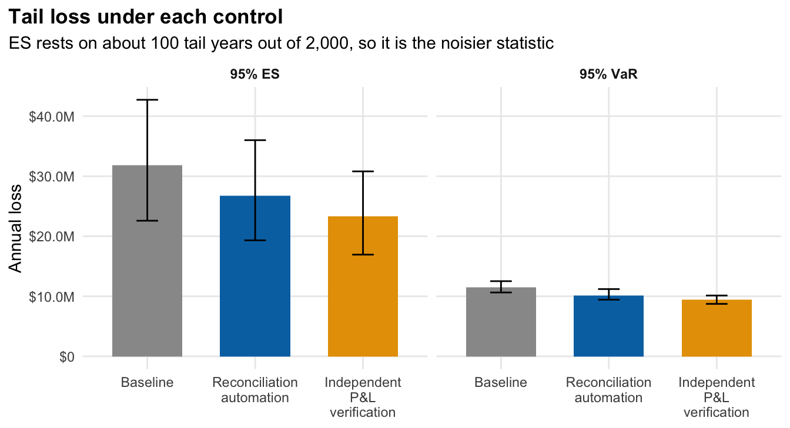
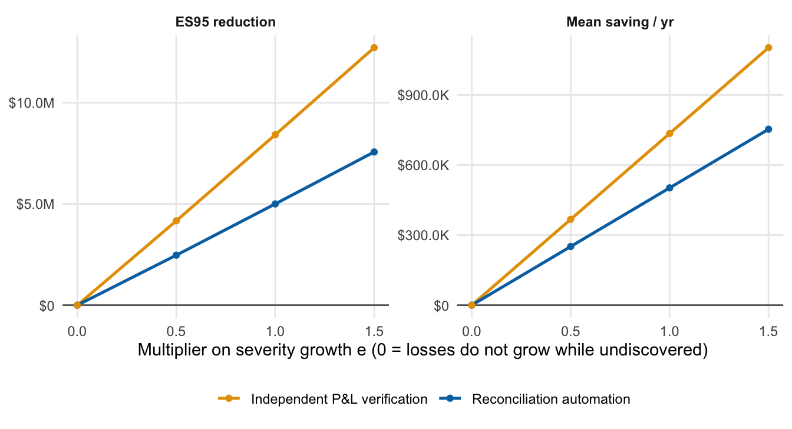

Faster detection has value because (i) loss is recorded sooner, which improves information, and (ii) in this simulator an event’s size grows linearly with the time it stays undiscovered, through the factor \((1 + e \times \text{lag})\). Channel (ii) is the only way a control changes incurred loss; if \(e = 0\), mean and tail incurred loss are identical with and without the control, and only the information value in (i) remains. This page measures how much a detection control is worth under those assumptions. The effect sizes and costs are placeholders, not benchmarks; a real engagement would replace them with measured detection times and quoted prices.
Automated daily position/cash reconciliation against prime-broker statements
$400,000
Independent P&L verification
Independent P&L and limit-breach verification with prime-broker position feed
$700,000
Each control shifts the lag distribution for some event types (see params.yaml). Baseline and control arms use the same seeds, so each pair of runs shares event counts and severity draws, and the saving is a paired difference.
Result: expected loss and tail
Code
base <- ctl |>filter(arm =="baseline")ctl |>transmute(Arm = ctl_lab[arm],`Mean incurred / yr`= mean_incurred_per_year,`bps of AUM`= mean_incurred_per_year / aum *1e4,`Saving / yr`=if_else(arm =="baseline", NA_real_, mean_saving_per_year),`Annual cost`= annual_cost,`Net / yr`= net_benefit_per_year,`Undiscovered at year 10`= mean_undiscovered,`95% VaR (annual)`= annual_var95,`95% ES (annual)`= annual_es95 ) |> gt::gt() |> gt::fmt_currency(-c(Arm, `bps of AUM`), decimals =2, suffixing =TRUE) |> gt::fmt_number(`bps of AUM`, decimals =1) |> gt::sub_missing(missing_text ="-") |> gt::tab_source_note("VaR/ES are over single origin-year totals pooled across 200 databases (2,000 years), so ES95 averages about 100 tail years. Savings are paired against the baseline arm. At full effectiveness the saving is also the most the control could cost and still break even.")
Table 2
Arm
Mean incurred / yr
bps of AUM
Saving / yr
Annual cost
Net / yr
Undiscovered at year 10
95% VaR (annual)
95% ES (annual)
Baseline
$6.04M
12.1
-
-
-
$12.62M
$11.48M
$31.79M
Reconciliation automation
$5.53M
11.1
$502.30K
$400.00K
$102.30K
$6.27M
$10.14M
$26.79M
Independent P&L verification
$5.30M
10.6
$735.12K
$700.00K
$35.12K
$4.54M
$9.44M
$23.37M
VaR/ES are over single origin-year totals pooled across 200 databases (2,000 years), so ES95 averages about 100 tail years. Savings are paired against the baseline arm. At full effectiveness the saving is also the most the control could cost and still break even.
On expected loss alone, both controls are close to break-even: reconciliation automation saves $502.30K a year against a $400.00K cost (net $102.30K), and independent P&L verification saves $735.12K against $700.00K (net $35.12K). Put differently, the most each control could cost and still break even at full effectiveness is its mean saving. The simulated 95% expected shortfall of annual loss falls from $31.8M to $26.8M and $23.4M; the intervals below show how well that is pinned down. Because baseline and control share seeds, a paired bootstrap of the reduction is tighter than the separate intervals: ES95 falls by $5.0M (95% interval $3.0M to $7.4M) under reconciliation automation and by $8.4M ($5.1M to $12.2M) under independent P&L verification. Both the mean and the tail savings come from the same severity-growth mechanism (see the sensitivity below).
Code
bind_rows( tail_ci |>transmute(arm, stat ="95% VaR", value = var95, lo = var95_lo, hi = var95_hi), tail_ci |>transmute(arm, stat ="95% ES", value = es95, lo = es95_lo, hi = es95_hi)) |>mutate(arm =factor(arm, levels =names(ctl_lab))) |>ggplot(aes(arm, value, fill = arm)) +geom_col(width =0.65) +geom_errorbar(aes(ymin = lo, ymax = hi), width =0.2) +facet_wrap(~stat) +scale_fill_manual(values =c(baseline ="grey60", ctl_col), guide ="none") +scale_y_continuous(labels = fmt_usd) +scale_x_discrete(labels = \(x) str_wrap(ctl_lab[x], 14)) +labs(x =NULL, y ="Annual loss", title ="Tail loss under each control", subtitle ="ES rests on about 100 tail years out of 2,000, so it is the noisier statistic") +theme_op()

Figure 1: Pooled single-year loss. Error bars: 95% percentile bootstrap over the 200 databases.
How effective must a control be? Break-even
The size of the lag reduction is the least certain input. Scaling each control’s assumed shift by a factor (1 = as assumed, 0 = no effect) shows where the mean saving equals the annual cost.
Code
be <- res$beggplot(be$curve, aes(scale, net, colour = control)) +geom_hline(yintercept =0, colour ="grey40") +geom_ribbon(aes(ymin = net -1.96* se, ymax = net +1.96* se, fill = control), alpha =0.15, colour =NA) +geom_line(linewidth =0.9) +geom_point() +scale_colour_manual(values = ctl_col, labels = ctl_lab, name =NULL) +scale_fill_manual(values = ctl_col, guide ="none") +scale_y_continuous(labels = fmt_usd) +labs(x ="Fraction of the assumed lag reduction actually achieved", y ="Net benefit per year (saving - cost)", title ="Break-even effectiveness", subtitle ="Band: 95% interval on the paired mean saving (simulation error only)") +theme_op()
The band reflects Monte Carlo error only. It does not include uncertainty in the cost, the lag shift, or the severity-growth assumption, which are likely larger.
Sensitivity to severity growth
Every dollar saving on this page flows through the severity-growth parameter \(e\). The study was re-run with \(e\) multiplied by 0, 0.5, 1 (as assumed) and 1.5, using the same seeds.
Code
base_es <- sens |>filter(arm =="baseline") |>select(e_mult, base_es = annual_es95)sens |>filter(arm !="baseline") |>left_join(base_es, by ="e_mult") |>transmute(e_mult, Control = ctl_lab[arm], `Mean saving / yr`= mean_saving_per_year, `ES95 reduction`= base_es - annual_es95) |>pivot_longer(c(`Mean saving / yr`, `ES95 reduction`), names_to ="Measure") |>ggplot(aes(e_mult, value, colour = Control)) +geom_hline(yintercept =0, colour ="grey40") +geom_line(linewidth =0.9) +geom_point() +facet_wrap(~Measure, scales ="free_y") +scale_colour_manual(values =setNames(ctl_col, ctl_lab[names(ctl_col)]), name =NULL) +scale_y_continuous(labels = fmt_usd) +labs(x ="Multiplier on severity growth e (0 = losses do not grow while undiscovered)", y =NULL) +theme_op()

Figure 3: Paired mean saving and ES95 reduction against the multiplier on severity growth e (1 = as assumed).
Code
s0 <- sens |>filter(e_mult ==0, arm !="baseline")
With \(e = 0\) the paired saving is $0 to $0 a year: any value that is not exactly zero is a simulation artefact (paired runs share event counts and severities, so with \(e = 0\) incurred loss should be identical). The tail reduction vanishes in the same way.
Information value
The cleanest benefit that does not depend on severity growth is earlier information. At the evaluation date, the loss that has already happened but is not yet in the database falls from $12.6M to $6.3M under reconciliation automation and $4.5M under independent P&L verification. A smaller undiscovered balance means the reported loss trend is closer to the true one, and the loss data a firm uses for capital, board reporting or allocator disclosure is less incomplete. This benefit is not converted to dollars here, because its value depends on how the firm uses the data.
Caveats specific to this page
Incurred loss changes under a control only through the severity-growth term \((1 + e \times \text{lag})\). If losses do not grow while undiscovered (\(e = 0\)), neither the mean nor the tail of incurred loss changes; the only benefit left is earlier information, shown above as undiscovered loss at year 10.
Control cost is a single annual figure with no ramp-up, no false-positive workload and no risk of the control failing.
Losses are gross. Loss-event insurance, recoveries from counterparties and compensation that is later clawed back would reduce net losses and therefore net savings.
No discounting, no correlation with market stress, and no regulatory or reputational effects are modelled.